Nishiwaki, Hyogo: things to do, food and stays
Nishiwaki · Hyogo
Nishiwaki
Highlighted on the Hyogo map.
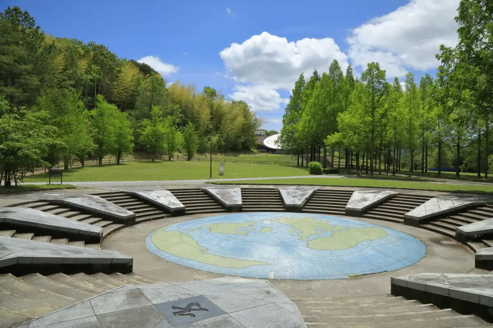
Stay
西脇ロイヤルホテル
Nishiwaki Roiyaru Hotel
Hotel in Nishiwaki with business travelers.
アーバンホテル西脇
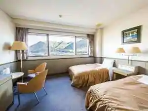
Aban Hotel Nishiwaki
Hotel in Wakame, Nishiwaki with business travelers.
Dining
肉料理 樹
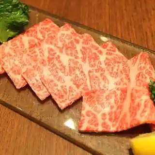
Nikuryori Ki
西脇大橋ラーメン
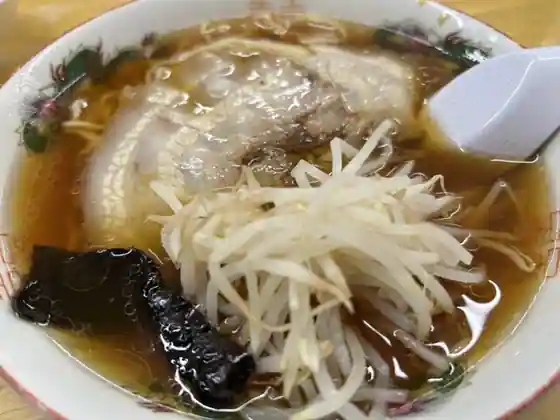
Nishiwaki Ohashi Ramen
らぁめん こばやし
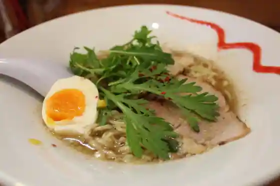
Ramen Kobayashi
隠れ処すぎや
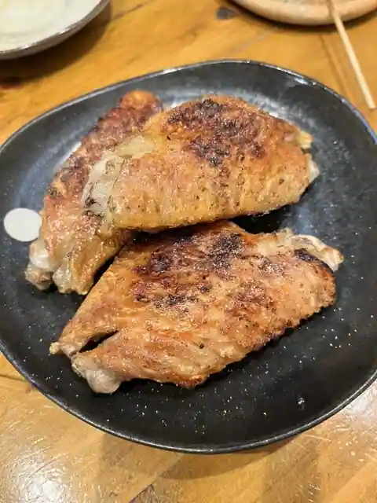
Kakure Shosu Ki Ya
レ・ボ・プロヴァンス
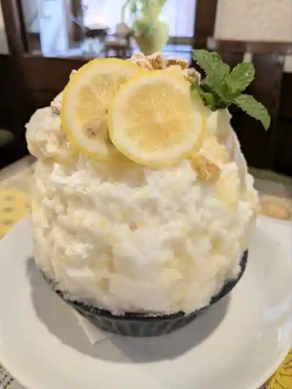
Re Bo Purovansu
バーガークレイジー
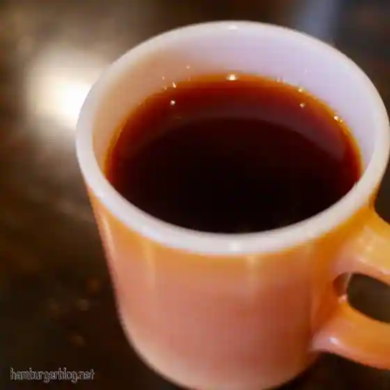
Burger Kureiji
庭が森のピザ屋さん QUARANTA
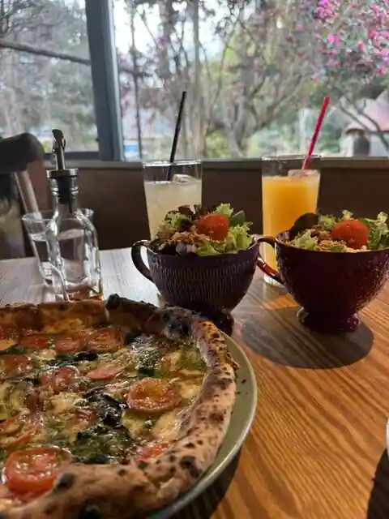
Niwa Ga Mori No Pizza Ya San QUARANTA
かおるちゃんらーめん
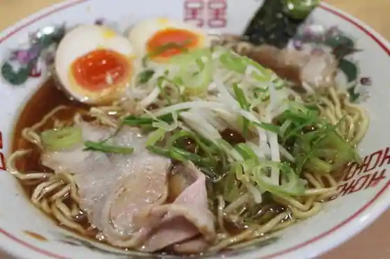
Kaoruchan Ramen
内橋ラーメン
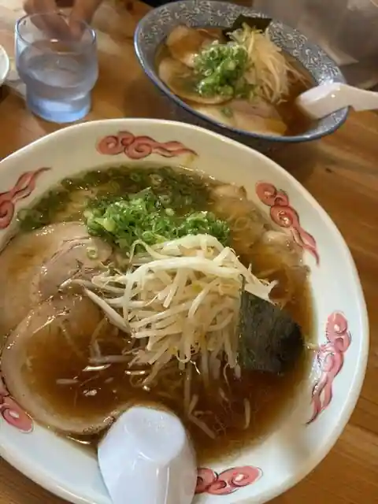
Uchihashi Ramen
笑仁。
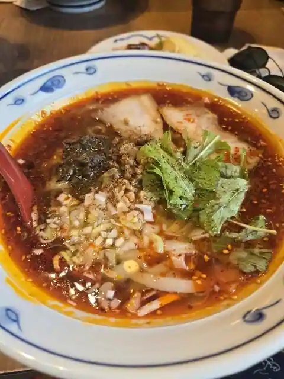
Warai Hitoshi.
橋本屋
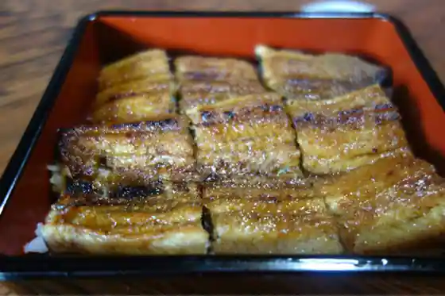
Hashimoto Ya
アララギ
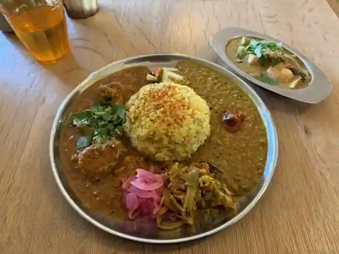
Araragi
かんばしラーメン
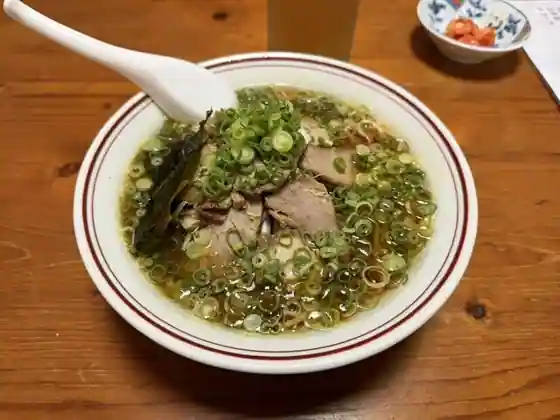
Kanbashi Ramen
ひすい
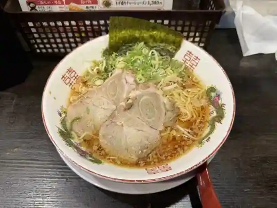
Hisui
ベルデ・ヴェール
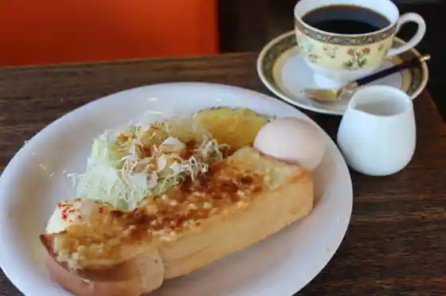
Berude Veru
ゴールデンバレーゴルフ倶楽部レストラン
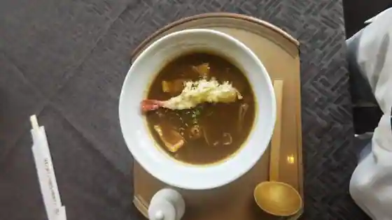
Gorudenbaregorufu Kurabu Restaurant
shima305
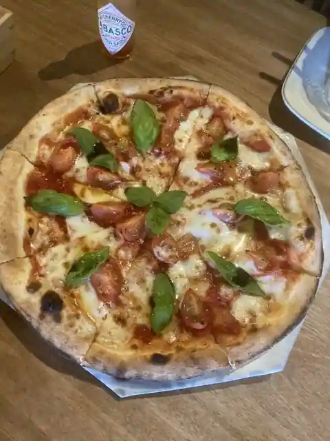
shima305
翠蓮
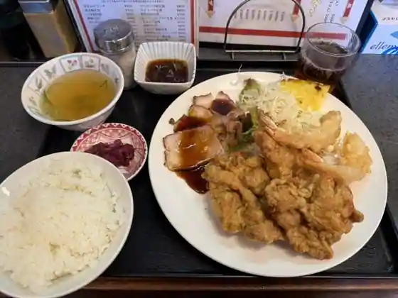
Suiren
一番
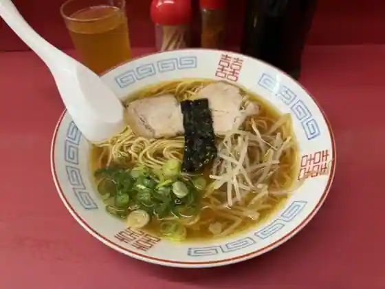
Ichiban
Cinema Coffee Umbrella
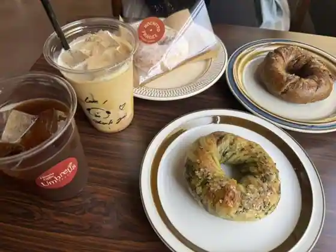
Cinema Coffee Umbrella
カジツ
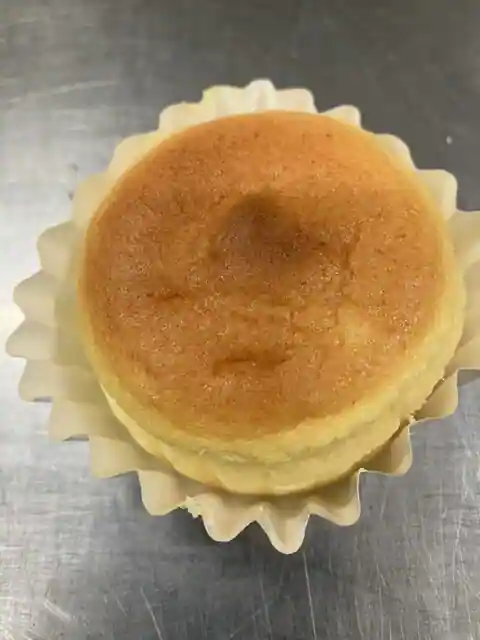
Kajitsu
小洞天
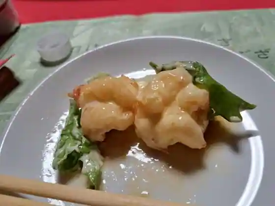
Sho Doten
TAKAMI COFFEE
TAKAMI COFFEE
ピーターパン 上野本店
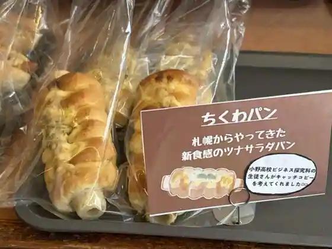
Pita Bakery Ueno Hon
Sights
Nippon Heso Park
Roadside Station Kita Harima Eko Museum